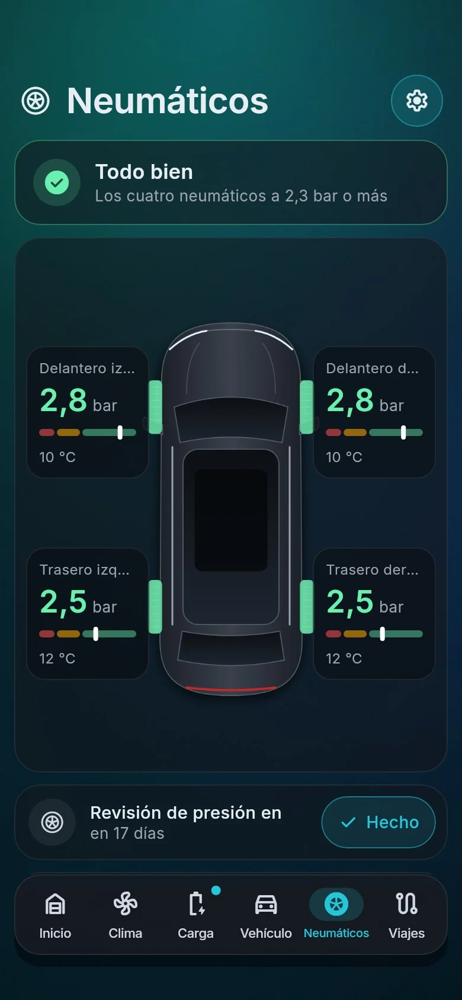
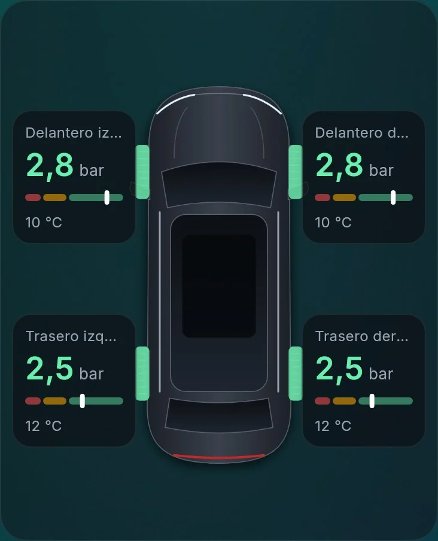
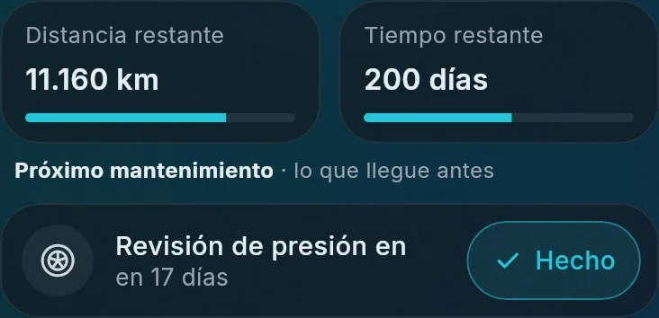
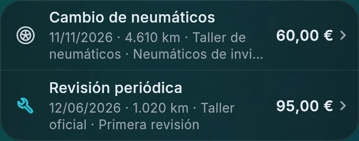

Neumáticos, mantenimiento, documentos
Que no se te escape nada de tu coche.
Presión de los neumáticos, la próxima revisión, la ITV, el seguro y la viñeta – Carmeo guarda las fechas y te avisa a tiempo.


Presión de los neumáticos, rueda a rueda.
Presión y temperatura de cada neumático, con un aviso por debajo de los límites que fijes. Un recordatorio periódico te dice cuándo toca comprobarlos en la gasolinera.


La próxima revisión – por kilómetros o por fecha.
Carmeo cuenta hacia atrás hasta la próxima revisión, lo que llegue antes. El registro de mantenimiento guarda cada revisión, cambio de neumáticos y reparación con su coste, y lo exporta en CSV o PDF cuando vendes el coche.

Documentos y plazos.
ITV, seguro, viñeta: añade una vez la fecha de caducidad, ve los días que quedan y recibe un recordatorio antes de que venza.
Pruébala en tu propio coche.
Carmeo es gratis. Únete al grupo de prueba abierta en iPhone o Android.